Mother's Low-Cost Home-Building Contest: The Winners
By the Mother Earth News editors
March/April 1986
After months of agonizing deliberation, our six-member panel of judges has narrowed the financialists to five superior designs.
It sounded simple enough at first: We'd have a contest to see who could build the least expensive home. Maybe there'd be a first, second, and third prize, and the top entries could split $1,000 into $500, $300, and $200 awards. We'd have a six-member panel of judges-an architect, two professional builders, and a trio of MOTHER's editors with various levels of building expertise-to bring a broad base to the scrutiny. Well, a year has passed since we announced the contest, and we can tell you for sure that it didn't turn out to be quite as simple as we'd imagined.
For one thing, there are big houses and little ones, and economy of scale certainly applies to construction: A 3,000-square foot home is much easier to build for less than $15 per square foot than is a 1,000-square=foot one. Initially, we planned to correct for this by limiting entries to houses of 1,500 or more square feet. The trouble is, the best way to limit overall home cost is to keep the dwelling small. Not wishing to eliminate any potentially interesting entries, we lifted that restriction. Then there was the question of houses built from trees on the owners' property. Should we throw in the cost of the land and, if applicable, the cost of purchasing a sawmill to cut the timber? And, of course, to some degree you do get what you pay for. A cheaper house isn't necessarily a better one; should long-term operating costs be considered?
As the 33 entries in the Low-Cost Home-Building Contest began arriving in April 1985, the need to weigh these and other considerations became increasingly obvious. In short, it became apparent that we couldn't simply divide material cost by square footage to pick a winner. Nonetheless, we were receiving some extraordinary entries. All of them represented ingenious ideas, but a few of the designs did stand out.
By July, our panel had made the easy decisions. We'd managed to pick out seven homes that were particularly inexpensive, innovative, and well executed. Getting from there to choosing the winner, however, proved to be an almost insurmountable problem. We simply couldn't agree. No question about it, personal taste had come into play. And, unfortunately, some of the opinions were so disparate that it would have been unreasonable to work out some sort of point-based ranking system and decide by averages.
The closest our six judges could come to consensus was to agree on which of the seven houses they'd like to see among the top five. And so it is: We've picked five winners and two honorable mentions. The five will each receive $200 in cash and will split the following contingency prizes by lottery:
Buck Horse: a self-leveling sawbuck/work platform/sawhorse, by Cosco Inc.
Jacuzzi RM2 Jet Pump: a 3/4-horsepower submersible pump, by Jacuzzi Brothers Inc.
MD-400: $100 worth of construction adhesive used for building decks, patios, and other outdoor construction, by Macklanburg Duncan Co.
Step Deck: a step stool/work platform, by Cosco Inc.
In this issue we're going to give you a glimpse of each of the five winning entries, as well as the two runners-up, and describe one of the winners-James and Laurie Kennedy's 3,200-square-foot modified saltbox-in more detail. Then, in the following four issues, we'll proceed to elaborate on the Finley, Fletcher, Marquardt, and Mason homes.
It's safe to say that every one of these houses is a tremendous value, and you may even be able to pick one that, for you, is a clear winner. Sit a half-dozen people of various backgrounds down and try to get them to agree, however, and you're likely to get a hung jury.
The winning designs we picked represent everything from cordwood to post-and-beam to log to double-wall superinsulated construction. There's an interesting lesson in that diversity: No single construction method is inherently superior. The most economical building system is the one that's most appropriate to the owners' resources and needs. Stick with us and find out how five success stories in home building came to be.
James and Laurie Kennedy's 3,250squarefoot, three-bedroom home is perhaps the most ambitious, and certainly the largest, of our house contest winners. Not surprisingly, with features such as a solarium, a metal roof, butcher-block countertops, a walkin cedarlined shower, and separate wine and root cellars, it's also the most expensive. We think you'll agree, though, that at a materials cost of $11.85 per square foot, the Kennedys certainly did get their money's worth.
The couple designed the three-story building themselves, and Jim contracted the job, mostly to three craftsmen from nearby Carthage, Maine. Most of the wood used to build the passive solar, modified saltbox was cut on the Kennedys' property and milled and planed at a local sawmill. All of the fieldstones for the chimney, patio, and retaining walls were collected nearby.
The Kennedys' home is also the only winner that employs any earth berming. The three-story dwelling is built into a south-facing hillside, with all of the first floor below grade and the north wall of the second partially bermed. All of the foundation is poured concrete covered with Bituthene waterproofing membrane and insulated with 4 inches of extruded polystyrene foam on the outside. The perimeter of the foundation is wrapped with drainage tile to prevent water from collecting against the walls.
All of our judges agreed that the Kenne dys' home was very well designed from an engery standpoint. Besides tile earth perming, the north wall has doubled 2 X 4 walls with 9 inches of fiberglass, 2 inches of extruded polystyrene foam, and an air space (for about R-45)-and no windows; the east and west walls both have 6" fiberglass and 2" extruded polystyrene (for about R-35); the south wall is fitted with 6" glass and 1 " extruded polystyrene (for about R29); and the ceiling and roof have 12" fiberglass (for about R-40).
For passive solar gain, the second floor solarium is covered with Vermont slate as a passive solar absorber, and the room is separated from the rest of the house by an insulated wall and a sliding glass door. The door and windows are opened when the solarium has heat available for warming other rooms.
Rackup heat comes from woodstoves on the first and second floors. There are three 8" X 12" flues in the central chimney, and a dumbwaiter allows wood to be hauled up from the first floor to the second with ease. In the same assembly, a laundry chute runs all the way from the third floor to the first.
The Kennedys paid out almost $23,000 for local skilled labor, but beyond the basic construction, they also got 40 feet of handmade butcher block countertop in the kitchen, custom cabinets built on-site, handmade doors (those that go to the outside are insulated), and some beautiful finish work.
Though we were unable to achieve a consensus among our six judges, the Kennedys' home would have been the winner if we'd used a point-based ranking system. No judge rated it lower than second. Architect Angus Macdonald's comments are typical:
Truly a fine plan, well presented and beautifully executed. The general section has a good thermal concept, using the high thermal inertia of the basement and solarium floor. The central chimney mass helps make backup wood heating efficient.
This is the most refined floor plan among the entrants, though two upstairs rooms are very small. The cost is higher than some and owner participation isn't as great, but the result shows a professional finish inside and out. The exterior elevations are beautiful, and the profile acts aesthetically with the lay of the land.
WINNER
Owners: the Marquardts
Designers: the owners
Builders: the owners
Location: Mediapolis, Iowa
Type of Construction: log
Square Footage: 1,580
Material Cost: $8,890
Cost per Square Foot: $5.60
Special features: Half of the 252 logs came from a state forest for $1.00 each; the other half were traded for clearing work. The roof is insulated to R-44, the walls to about R-14, and the floor to R-21. The total heating and cooling bill for 1983 was $158, of which $40 went for chain saw maintenance to keep the two woodstoves supplied.
WINNER
Owners: Richard and Susan Mason
Designers: the owners
Builders: the owners
Location: Charlton, Massachusetts
Type of Construction: post-and-beam
Square Footage: 1,600
Material Cost: $5,690 + $2,600 sawmill
Cost per Square Foot: $3.55
Special features: All timbers were sawn from trees on the property or salvaged from an old barn. The interior paneling and exterior siding were cut from trees onsite, and the chimney was built from fieldstone on-site. All space and water heating comes from a woodstove built by the owners. All wood flooring (pegged and tongueand-groove pine and oak) was cut on-site two years before being laid. The owners plan to recoup the cost of the sawmill by doing outside saw work.
WINNER
Owners: Mr. and Mrs. Glen L. Fletcher Jr.
Designers: the owners Builders: the owners
Location: Lewiston, Michigan
Type of Construction: post-and-beam with cordwood masonry
Square Footage: 1,540
Material Cost: $13,450
Cost per Square Foot: $8.75
Special features: All posts and beams and all cordwood masonry are from cedar logs cut on the owners' land and dried for 2-1/2 years. The owners also salvaged two barns for wood, bricks, and nine tons of stone. All backup heat is from a woodstove.
WINNER
Owner: Leon D. Finley
Designer: the owner
Builder: the owner
Location: Thompson Falls, Montana
Type of Construction: superinsulated, double-wall
Square Footage: 1,150 Material Cost: $6,000
Cost per Square Foot: $5.20
Special features: A very high R-value, a double vapor barrier, and a ground-coupled air exchanger allow this house to be heated by a 1,500-watt space heater at -25°F! Total heating bill for 12 months, from July to July, was $84. The owner estimates that the house could be duplicated for about $9,500.
HONORABLE MENTION
Owners: George and Barbara Hoffman
Designers: the owners
Builders: the owners, except roof and cellar
Location: Stanley, Virginia
Type of Construction: post-and-beam with exterior 2 X 6 stud walls
Square Footage: 2,360
Material Cost: $28,800
Cost per Square Foot: $12.20
Special features: To simplify the construction, George and Barbara used stud walls on the exterior and post-and-beam inside. The exterior walls have full fiberglass insulation, plus a 1" layer of extruded polystyrene foam. The interior stone wall conceals a Russian fireplace. All trim is native pine and oak.
HONORABLE MENTION
Owners: Paul and Paula Lyons Designers: the owners
Builders: the owners, except for excavation, concrete, and rough plumbing
Location: Amherst, Massachusetts
Type of Construction: masonry and post-and-beam, earth sheltered
Square Footage: 1,550 Material
Cost: $13,500
Cost per Square Foot: $8.70
Special features: Bermed walls are drystacked, surface-bonded 12" block. Posts and beams are of native hemlock, with 2 X 6 framing between. There are 6 inches of fiberglass insulation in the walls and 9 inches in the ceilings. All doors, windows, and cabinets were built on-site by the owners.
|
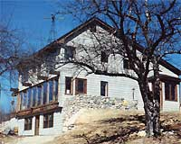 PHOTOS COURTESY OF JAMES PHOTOS COURTESY OF JAMES KENNEDY The Kennedy's three-story, passivesolar home cost only $11.85 per square foot for materials. |
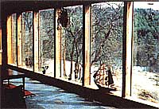 PHOTO COURTESY OF THE MARQUARDTS The solarium can be thermally isolated from the rest of the house. |
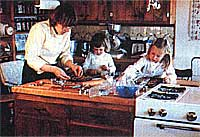 STAFF PHOTO Counters and cabinets are all custom-made. |
|
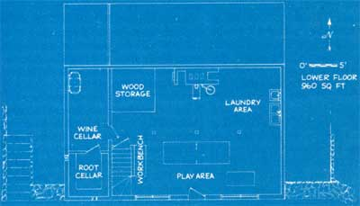 PHOTO COURTESY OF MR. AND MRS. FLETCHER The north side of the Kennedy home is bermed to protect it from winter winds. |
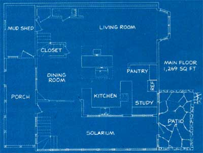 PHOTO COURTESY OF LEON D. FINLEY |
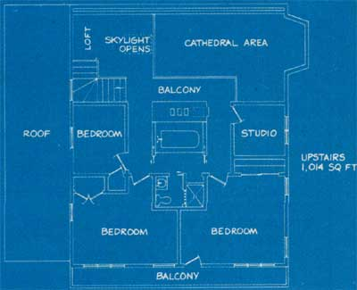 |
|
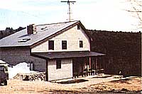 |
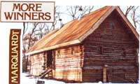 |
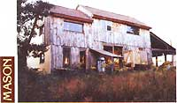 |
|
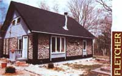 |
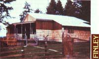 |
 |